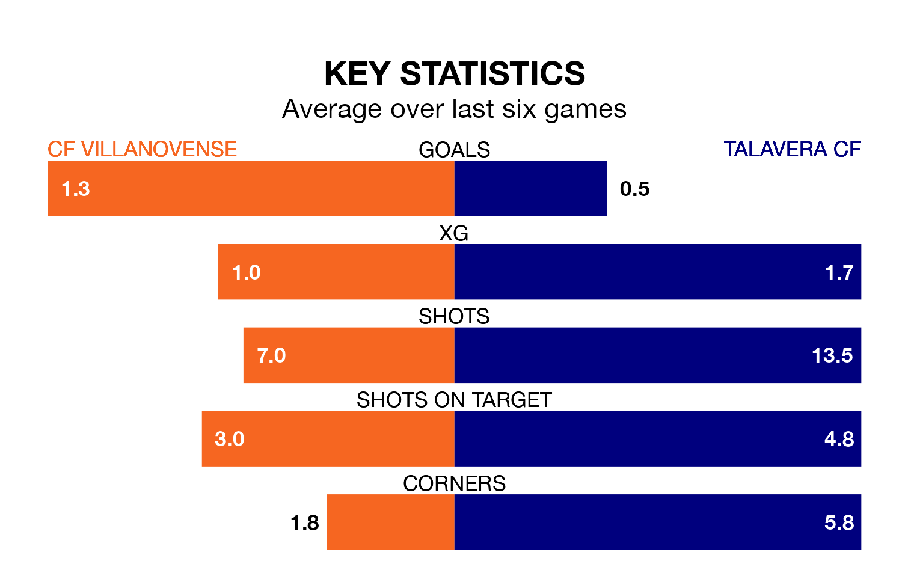

Talavera CF travel to the Estadio Municipal Villanovense looking to secure a first win in six Segunda División RFEF Group 5 games against CF Villanovense on Sunday.
Talavera have lost two and drawn three matches since they last earned three points – against Montijo on November 18.
They face a Villanovense side who have won two and drawn one over that time.
With 18 goals in 17 games so far this season, Talavera are scoring at the league's average rate with 1.1 goals per game. And they are conceding fewer than average, letting in 10 goals at a rate of 0.6 per game.
Villanovense are also average scorers, with 1.1 goals per game. They have conceded 0.9 goals per game.
The visitors are sixth in the table after 17 games, of which they have won seven and drawn six, earning 27 points.
The home team are four places behind Talavera in 10th, with six wins and five draws putting them on 23 points.
Villanovense's last match was on January 7, a 3-0 win against Ursaria.
Talavera drew 0-0 with CDA Navalcarnero last time out, also on January 7.
Updated: 11:31, 09/01/24